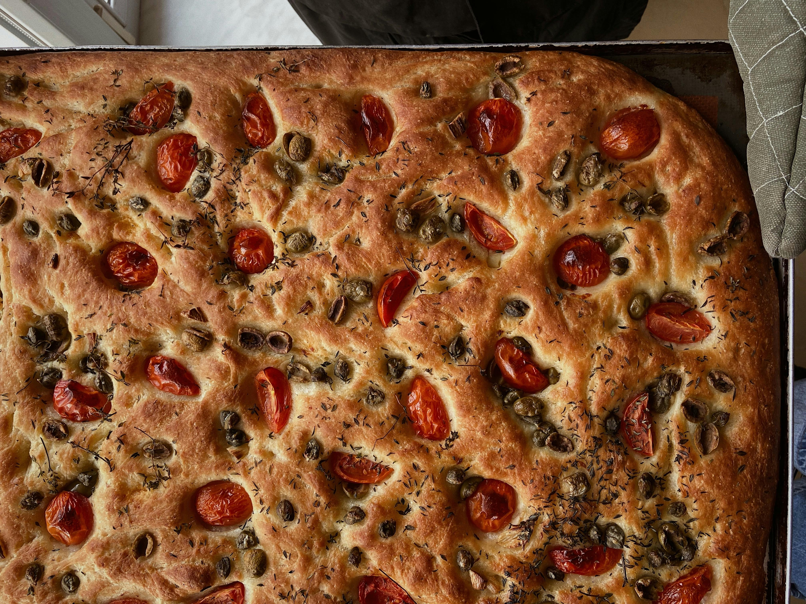
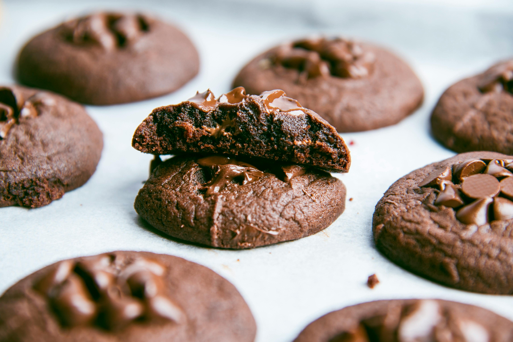

Homemade Focaccia Bread
A classic Italian flatbread that's crispy on the outside, fluffy on the inside, and infused with olive oil and herbs.
Ingredients
- 500g strong bread flour, plus extra for dusting
- 7g dried fast action yeast
- 2 tsp fine sea salt
- 1 tsp flaky sea salt
- 5 tbsp olive oil, plus extra for the tin and to serve
- 1 tsp salt
- 3 different types of cheese
- Small sprigs of rosemary
- Sun-dried Tomatoes
Preparation Steps
- Tip the flour into a mixing bowl. Mix the yeast into one side of the flour, and the fine salt into the other side. Then mix everything together, this initial seperation prevents the salt from killing the yeast.
- Make a well in the flour and add 2 tbsp oil and 350-400ml lukewarm water, adding it gradually until you have a slightly sticky dough
- Sprinkle the work surface with flour and tip the dough onto it, knead for 5-10 mins until your dough is soft and less sticky.
- Put the dough into a clean, oiled bowl, cover with a tea towel and leave to prove for 1 hr until doubled in size.
- Oil a rectangle, shallow tin (25 x 35cm). Stretch the dough to fill the tin, whilst folding in your cheese, tomatoes and onion. Cover with a tea towel and leave to prove for another 35-45 mins.
- Heat the oven to 220°C/200°C fan/gas 7. Press your fingers into the dough to make dimples. Mix together 1½ tbsp olive oil, 1 tbsp water and the flaky salt and drizzle over the bread. Push sprigs of rosemary into the dimples in the dough and remaining tomato and onion ontop.
- Bake for 20 mins until golden. Whilst the bread is still hot, drizzle over 1-2 tbsp olive oil.

Classic Chocolate Chip Cookies
Soft, chewy, and full to the brim with chocolate chunks, these cookies are the ultimate comfort treat!
Ingredients For 10-12 Cookies
- 200g butter (room temperature)
- 300g caster sugar
- 1 cup brown sugar, packed
- 1 large egg
- 1 tsp vanilla extract
- 275g self-raising flour
- 75g cocoa powder
- A dash of milk
- 1 tsp salt
- 1 bar of chopped milk chocolate
- 1 bar of chopped white chocolate
Preparation Steps
- Preheat your oven to 200°C (180 fan) or 392 °F. Line 2 or 3 baking trays with baking paper.
- Cream together the butter and sugar until combined.
- Once the mix is smooth, add in the egg and whisk.
- Next, sift in the dry ingredients, then mix till combined. Add in the dash of milk here if the mix is looking dry.
- Break the chocolate bars and mix them into the dough. Add as much chocolate as you wish to your taste.
- Place the dough onto the baking sheets. They should make 10-12 cookies depending on size, I normally get 12.
- Place in the oven for 11 minutes, leave them to sit for 30 minutes to cool and set.